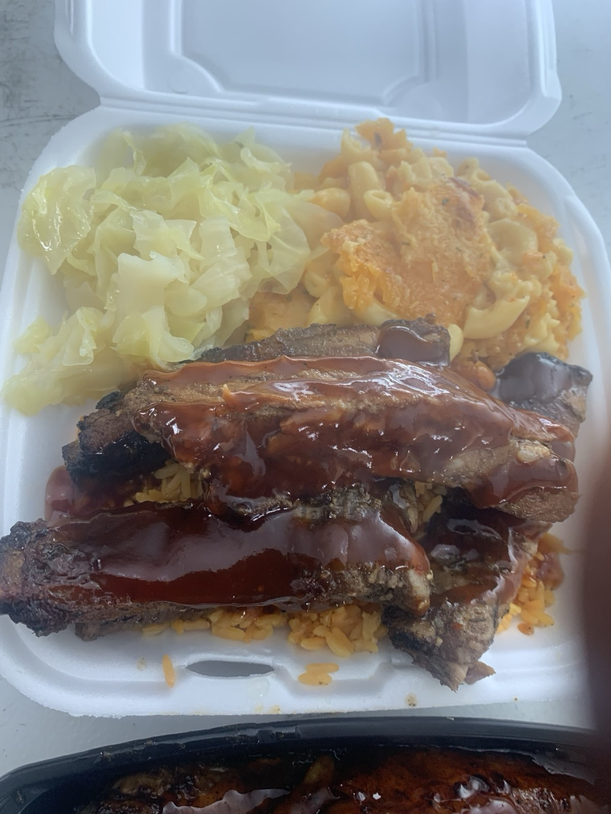

Food
- One hero oxtail plate or bowl.
- One wing meal or wing bowl.
- One chopped chicken bowl.
- One curry chicken plate.
- One shrimp or salmon bowl.
- One tray setup with rice, cabbage, mac, yams, cornbread, cake, and drinks if available.
One shoot day becomes announcement videos, weekly schedule clips, food B-roll, interview clips, hook-style posts, Stories, and registration content for the free food event.
This is the simple visual to present: we film five buckets of footage, then turn them into the weekly content required to promote the anniversary and collect names/emails.
The shoot only works if the food, truck, owner, and registration flow are prepared before the camera arrives.
These shots come from the current Island Boy menu: oxtails, wings, chopped chicken, curry chicken, shrimp, salmon, beef ribs, rice, cabbage, yams, beans, mac, cornbread, cake, and drinks.





The research points to raw, useful, owner-led clips: real process, real people, real questions, and a clear CTA.
Film him near the truck, not in a blank room. The truck, food, and hands working should prove the story while he talks.
Each short clip should move fast: no logo intro, no long setup, no vague caption.
These are the highest-value concepts for the July anniversary push.
| Clip idea | Opening hook | What to film | CTA |
|---|---|---|---|
| Anniversary invite | Charlotte, do not make dinner plans July 26. | Owner at truck, oxtail reveal, QR sign, event details. | Register for faster check-in. |
| Reply-to-comment | Replying to: "Do y'all cater parties?" | Tray setup, plate handoffs, sides, truck window. | Register now or book catering. |
| Food hook | The plate that built the truck. | Oxtail gravy pour, fork pull, rice and sides. | Follow for this week's schedule. |
| Founder story | Seven years in business, and he is giving food away. | Owner interview plus old/new truck visuals if available. | Come celebrate with us. |
| Stitch local trend | Best food in Charlotte? Let's add one more. | Stitch/response, food closeups, truck, exact location. | Comment PLATE for the link. |
| Schedule video | Here is where the yellow truck is this week. | Truck exterior, menu, owner pointing to date/location card. | Save this and pull up. |
Research basis: TikTok recommends vertical 9:16, people on camera, a hook early, captions/text overlays, and a clear CTA. TikTok's 2026 trend report points toward unfiltered stories, process, comments, and community. TikTok Stitch and reply-to-comment formats are native ways to turn local questions into posts. Famous food truck examples like Kogi show the power of food + community + social location updates.
Sources: TikTok Creative Best Practices, TikTok Next 2026, TikTok Stitch, TikTok Reply to Comments With Video, Kogi BBQ, Meta Instagram Video Best Practices.